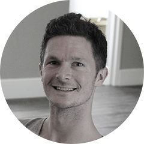
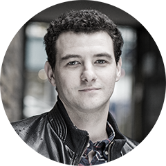
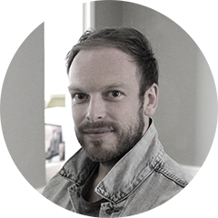
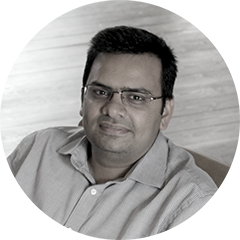

Team
-
Prior to founding Reflection, Gustaf led Business Development for Games & Education at BBC Worldwide. He has lived and worked in Seoul, Shanghai, and Austin where he designed and produced successful mobile and online games and services - one of which was acquired by Zynga in 2009. Gustaf has an MBA from Cass Business School in London.
CloseGustaf Leksell
Founder & CEO
-
Before founding Reflection, Chi ran his own company for 13 years developing software for a variety of businesses across a variety of technologies. He has designed and written games and software for the BBC, developed branded apps such as Wallace & Gromit and created mobile and web applications for companies such as Unilever and Motorola.
CloseChi Dire
Founder & COO
-
Martin has designed everything from Happy Meal toys to aircraft interiors and has been directing creative strategy and digital product design for the likes of Sky, Bentley, PayPal, Casio, ITN and The Law Society for over 11 years.
CloseMartin Ollivere
Design Lead
-
After working on both client and server technologies alongside his studies, Stefano left Italy to write his Master Thesis in Computer Science at the University of London, Birkbeck College. He was consequently hired as software engineer at Birkbeck College, collaborating on data centric academic publications before joining Reflection.
CloseStefano Capuzzi
Junior Engineer
-
Jamie has worked on a range of web projects in varying sectors and technologies from e-commerce systems for Bentley in C# .NET to iOS apps in Objective C. He has developed responsive front-end solutions for companies such as ITN, PepsiCo and Virgin Atlantic where his enjoyment lies in the precise implementation of design and user experience.
CloseJamie Gilman
Front-End Lead
-
Mitul was previously Head of Technology at Secondcap where he led technical strategy and engineering for the development of their global private equity platform. Prior to that he held several senior positions leading the development of visual communication platforms. Mitul's first entrepreneurial venture saw him build a multinational IT consultancy which was acquired in 2007.
CloseMitul Amin
CTO
-
Nicolas has a PhD in Astrophysics from McMaster University and MSc in Physics & Astronomy from Montréal University where he analysed spectroscopic data taken by the space telescopes FUSE and HST (NASA). Before joining Reflection, Nicolas co-founded an educational SaaS startup in California and worked as a Quantitative Analyst & Algorithmic Trader in Toronto.
CloseNicolas Petitclerc
Chief Data Scientist
-
Meg has 15 year experience in media, online and advertising businesses and has been involved in 6 successful startups. Meg started CNET Networks in Japan and managed the CNET, ZDNet and GameSpot brands in Korea and Taiwan as VP of Asia at CBS Interactive. Meg also successfully led the sale of CNET Networks Japan to The Asahi Newspaper Company in 2009. Prior to joining Reflection, Meg was the Director of Mobile Advertising Europe at GREE.
CloseMegumi Jinno
Commercial Director